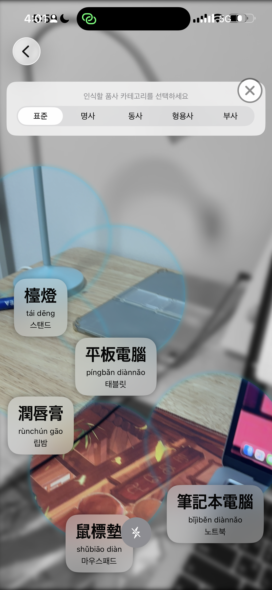

Jeong Been Lee의 이력서
My info

| 이름 | Jeong Been Lee (이정빈) |
|---|---|
| 직업 | iOS Developer |
| 거주지 | Busan |
| 학력 | Kyungsung University (전자공학 & 컴퓨터공학 복수전공) |
About
경성대학교에서 전자공학과 컴퓨터공학을 복수 전공하며, 하드웨어 제어 지식과 소프트웨어 개발 역량을 동시에 길렀습니다. Swift, SwiftUI, C++를 활용한 네이티브 앱 개발에 능숙하며, MVVM 아키텍처와 비동기 프로그래밍(async/await)을 활용하여 유지보수가 쉬운 깔끔한 코드를 지향합니다. iOS 위주의 개발자가 되는 것을 목표로 하고 있으며, 언어 공부를 좋아하여 모국어인 한국어 외에도 일본어(JLPT N1), 그리고 중급 이상 수준의 영어, 중국어 등 다양한 언어 능력을 바탕으로 글로벌 환경에서의 성장을 목표로 하고 있습니다.
Contact
Skills
- Swift
- SwiftUI
- C++
- iOS SDK
- MVVM Architecture
- Git
- Asynchronous Programming (async/await)
Projects
-
LearnSpot / AR & AI Language Learning Platform

iOS Developer (Main Programmer) | 2025-current
실시간 객체 인식 기술을 활용하여 사물의 이름과 병음, 뜻을 AR로 오버레이 해주는 언어 학습 애플리케이션입니다. -
Smart Solar Tracker / iOS-Integrated Hardware Project
iOS Developer & Hardware Integrator | 2026-2026
광원(스마트폰 플래시 등)의 방향을 실시간으로 추적하여 패널이 자동으로 빛을 향해 움직이는 하드웨어 연동 iOS 프로젝트입니다.